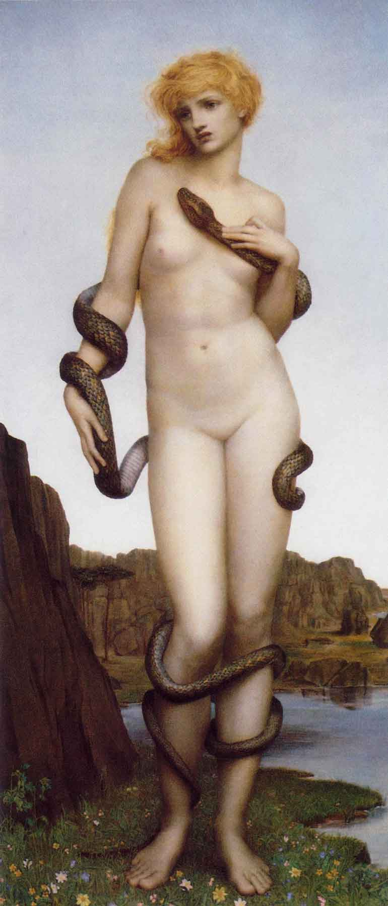
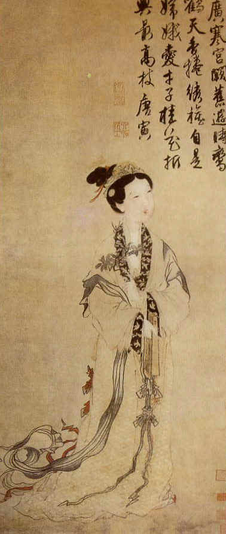
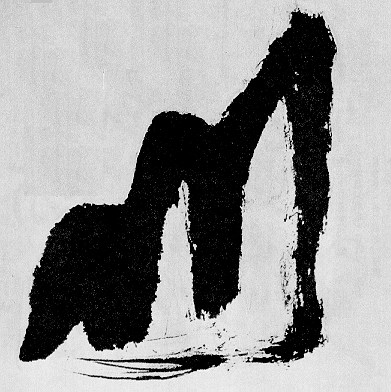

Prince Modupe wrote of
his encounter with the written word in his West African days:
The one crowded space in Father Perry's house was
his bookshelves. I gradually came to understand that the marks on the pages were trapped
words. Anyone could learn to decipher the symbols and turn the trapped words loose
again into speech. The ink of the print trapped the thoughts; they could no more get away
than a doomboo could get out of a pit. When the full realization of what this meant
flooded over me, I experienced the same thrill and amazement as when I had my first
glimpse of the bright lights of Konakry. I shivered with the intensity of my desire to
learn to do this wondrous thing myself.
In striking contrast to the native's eagerness, there are the current anxieties of
civilized man concerning the written word. To some Westerners the written or printed word
has become a very touchy subject. It is true that there is more material written and
printed and read today than ever before, but there is also a new electric technology that
threatens this ancient technology of literacy built on the phonetic alphabet. Because of
its action in extending our central nervous system, electric technology seems to favor the
inclusive and participational spoken word over the specialist written word. Our Western
values, built on the written word, have already been considerably affected by the electric
media of telephone, radio, and TV. Perhaps that is the reason why many highly literate
people in our time find it difficult to examine this question without getting into a moral
panic. There is the further circumstance that, during his more than two thousand years of
literacy, Western man has done little to study or to understand the effects of the
phonetic alphabet in creating many of his basic patterns of culture. To begin now to
examine the question may, therefore, seem too late.
The written word is a radical form
of reductionism, stripping intuitions of sensation, feeling, emotional content, and other
mingled associations.
Suppose
that, instead of displaying the Stars and Stripes, we were to write the words
"American flag" across a piece of cloth and to display that. While the symbols
would convey the same meaning, the effect would be quite different. To translate the rich
visual mosaic of the Stars and Stripes into written form would be to deprive it of most of
its qualities of corporate image and of experience, yet the abstract literal bond would
remain much the same. Perhaps this illustration will serve to suggest the change the
tribal man experiences when he becomes literate. Nearly all the emotional and corporate
family feeling is eliminated from his relationship with his social group. He is
emotionally free to separate from the tribe and to become a civilized individual, a man of
visual organization who has uniform attitudes, habits, and rights with all other civilized
individuals.

Harmonia, Wife of Cadmus
The
Greek myth about the alphabet was that Cadmus, reputedly the king who introduced the
phonetic letters into Greece, sowed the dragon's teeth, and they sprang up armed men. Like
any other myth, this one capsulates a prolonged process into a flashing insight. The
alphabet meant power and authority and control of military structures at a distance. When
combined with papyrus, the alphabet spelled the end of the stationary temple bureaucracies
and the priestly monopolies of knowledge and power. Unlike pre-alphabetic writing, which
with its innumerable signs was difficult to master, the alphabet could be learned in a few
hours. The acquisition of so extensive a knowledge and so complex a skill as
pre-alphabetic writing represented, when applied to such unwieldy materials as brick and
stone, insured for the scribal caste a monopoly of priestly power. The easier alphabet and
the light, cheap, transportable papyrus together effected the transfer of power from the
priestly to the military class. All this is implied in the myth about Cadmus and the
dragon's teeth, including the fall of the city states, the rise of empires and military
bureaucracies.
In
terms of the extensions of man, the theme of the dragon's teeth in the Cadmus myth is of
the utmost importance. Elias Canetti in Crowds and Power reminds us that the teeth
are an obvious agent of power in man, and especially in many animals. Languages are filled
with testimony to the grasping, devouring power and precision of teeth. That the power of
letters as agents of aggressive order and precision should be expressed as extensions of
the dragon's teeth is natural and fitting. Teeth are emphatically visual in their lineal
order. Letters are not only like teeth visually, but their power to put teeth into the
business of empire-building is manifest in our Western history.

The
phonetic alphabet is a unique technology. There have been many kinds of writing,
pictographic and syllabic, but there is only one phonetic alphabet in which semantically
meaningless letters are used to correspond to semantically meaningless sounds. This stark
division and parallelism between a visual and an auditory world was both crude and
ruthless, culturally speaking. The phonetically written word sacrifices worlds of meaning
and perception that were secured by forms like the hieroglyph and the Chinese ideogram.
These culturally richer forms of writing, however, offered men no means of sudden transfer
from the magically discontinuous and traditional world of the tribal word into the cool
and uniform visual medium. Many centuries of
ideogrammic use have not threatened the seamless web of family and tribal subtleties of
Chinese society. On the other hand, a single generation of alphabetic literacy
suffices in Africa today, as in Gaul two thousand years ago, to release the individual
initially, at least, from the tribal web. This fact has nothing to do with the content of
the alphabetized words; it is the result of the sudden breach between the auditory and the
visual experience of man. Only the phonetic alphabet makes such a sharp division in
experience, giving to its user an eye for an ear, and freeing him from the tribal trance
of resonating word magic and the web of kinship.
The
American Civil War was in every sense an example of the breakdown in tribal life. For the
South, an agrarian tribal society like ancient Rome and Greece, slavery, caste, and class
rule, were as natural as they were abhorrent and intolerable to the detribalized society
of the commercial North.
It
can be argued, then, that the phonetic alphabet, alone, is the technology that has been
the means of creating "civilized man"—the separate individuals equal before
a written code of law. Separateness of the individual, continuity of space and of time,
and uniformity of codes are the prime marks of literate and civilized societies. Tribal
cultures like those of the Indian and the Chinese may be greatly superior to the Western
cultures, in the range and delicacy of their perceptions and expression. However, we are
not here concerned with the question of values, but with the configurations of societies.
Tribal cultures cannot entertain the possibility of the individual or of the separate
citizen. Their ideas of spaces and times are neither continuous nor uniform, but
compassional and compressional in their intensity. It is in its power to extend patterns
of visual uniformity and continuity that the "message" of the alphabet is felt
by cultures.

The Chinese character for mountain typically creates its own world
As
an intensification and extension of the visual function, the phonetic alphabet diminishes
the role of the other senses of sound and touch and taste in any literate culture. The
fact that this does not happen in cultures such as the Chinese, which use nonphonetic
scripts, enables them to retain a rich store of inclusive perception in depth of
experience that tends to become eroded in civilized cultures of the phonetic alphabet. For
the ideogram is an inclusive gestalt, not an analytic dissociation of senses and
functions like phonetic writing.
What Freud called a 'complex.'
Kant answered Hume's and Decartes' skepticism by positing a priori
categories of perception, such as space, time, substance, and causality, which he believed
to be essential to our thinking and to our knowledge of the world. In contrast, McLuhan
does not believe these Kantian categories to be evolutionary or innate, but acquired from
a lineal environment (or bias) that is the product of Western literacy.
The
achievements of the Western world, it is obvious, are testimony to the tremendous values
of literacy. But many people are also disposed to object that we have purchased our
structure of specialist technology and values at too high a price. Certainly the lineal
structuring of rational life by phonetic literacy has involved us in an interlocking set of consistencies that are
striking enough to justify a much more extensive inquiry than that of the present chapter.
Perhaps there are better approaches along quite different lines; for example,
consciousness is regarded as the mark of a rational being, yet there is nothing lineal or
sequential about the total field of awareness that exists in any moment of consciousness. Consciousness is not a verbal process. Yet
during all our centuries of phonetic literacy we have favored the chain of inference as
the mark of logic and reason. Chinese writing, in contrast, invests each ideogram with a
total intuition of being and reason that allows only a small role to visual sequence as a
mark of mental effort and organization. In Western literate society it is still plausible
and acceptable to say that something "follows" from something, as if there were
some cause at work that makes such a sequence. It was David Hume who, in the eighteenth
century, demonstrated that there is no causality indicated in any sequence, natural or
logical. The sequential is merely additive, not causative. Hume's argument, said Immanuel
Kant, "awoke me from my dogmatic slumber." Neither Hume nor Kant, however,
detected the hidden cause of our Western bias toward sequence as "logic" in the
all-pervasive technology of the alphabet. Today in the electric age we feel as free to
invent nonlineal logics as we do to make non-Euclidean geometries. Even the assembly line,
as the method of analytic sequence for mechanizing every kind of making and production, is
nowadays yielding to new forms.
Dragon Lines - Ley Lines
Only
alphabetic cultures have ever mastered connected lineal sequences as pervasive forms of
psychic and social organization. The breaking up of every kind of experience into uniform
units in order to produce faster action and change of form (applied knowledge) has been
the secret of Western power over man and nature alike. That is the reason why our Western
industrial programs have quite involuntarily been so militant, and our military programs
have been so industrial. Both are shaped by the alphabet in their technique of
transformation and control by making all situations uniform and continuous. This
procedure, manifest even in the Graeco-Roman phase, became more intense with the
uniformity and repeatability of the Gutenberg development.
According to the subtle, arcane
doctrine of feng shui the dragon, a potent symbol of good luck, lives
beneath the earth during the winter months and re-emerges on the second day of the second
month of the Chinese calendar. This is when we see the gung fu schools simulate the
sinuous dragon in parades.
Civilization
is built on literacy because literacy is a uniform processing of a culture by a visual
sense extended in space and time by the alphabet. In tribal cultures, experience is
arranged by a dominant auditory sense-life that represses visual values. The auditory
sense, unlike the cool and neutral eye, is hyper-esthetic and delicate and all-inclusive.
Oral cultures act and react at the same time. Phonetic culture endows men with the means
of repressing their feelings and emotions when engaged in action. To act without reacting,
without involvement, is the peculiar advantage of Western literate man.
The
story of The Ugly American describes the endless succession of blunders achieved by
visual and civilized Americans when confronted with the tribal and auditory cultures of
the East. As a civilized UNESCO experiment, running water—with its lineal
organization of pipes—was installed recently in some Indian villages. Soon the
villagers requested that the pipes be removed, for it seemed to them that the whole social
life of the village had been impoverished when it was no longer necessary for all to visit
the communal well. To us the pipe is a convenience. We do not think of it as culture or as
a product of literacy, any more than we think of literacy as changing our habits, our
emotions, or our perceptions. To nonliterate people, it is perfectly obvious that the most
commonplace conveniences represent total changes in culture.
"The Karin put no stock in
schedules and timetables and the only date they observed with any regularity was the
arrival of the northeast monsoon; time was an organic living thing, and they considered
the Western practice of dividing the day into fixed units a kind of endearing
lunacy." —Cities on the River
The
Russians, less permeated with the patterns of literate culture than Americans, have much
less difficulty in perceiving and accommodating the Asiatic attitudes. For the West,
literacy has long been pipes and taps and streets and assembly lines and inventories.
Perhaps most potent of all as an expression of literacy is our system of uniform pricing
that penetrates distant markets and speeds the turn-over of commodities. Even our ideas of
cause and effect in the literate West have long been in the form of things in sequence and
succession, an idea that strikes any tribal or auditory culture as quite ridiculous, and
one that has lost its prime place in our own new physics and biology.
"[P]rinting ideograms is
totally different from typography based on the phonetic alphabet. For the ideograph even
more than the hieroglyph is a complex gestalt involving all the senses at
once." (The Gutenberg Galaxy)
The phonetic alphabet began with mapping the phonemes of oral language to
the sounds of things symbolized by images. Isn't this more direct and intuitve than using
isolated pictograms?
All
the alphabets in use in the Western world, from that of Russia to that of the Basques,
from that of Portugal to that of Peru, are derivatives of the Graeco-Roman letters. Their
unique separation of sight and sound from semantic and verbal content made them a most
radical technology for the translation and homogenization of cultures. All other forms of
writing had served merely one culture, and had served to separate that culture from
others. The phonetic letters alone could be used to translate, albeit crudely, the sounds
of any language into one-and-the-same visual code. Today, the effort of the Chinese to use
our phonetic letters to translate their language has run into special problems in the wide
tonal variations and meanings of similar sounds. This has led to the practice of
fragmenting Chinese monosyllables into polysyllables in order to eliminate tonal
ambiguity. The Western phonetic alphabet is now at work transforming the central auditory
features of the Chinese language and culture in order that China can also develop the
lineal and visual patterns that give central unity and aggregate uniform power to Western
work and organization. As we move out of the Gutenberg era of our own culture, we can more
readily discern its primary features of homogeneity, uniformity, and continuity. These
were the characteristics that gave the Greeks and Romans their easy ascendancy over the
nonliterate barbarians. The barbarian or tribal man, then as now, was hampered by cultural
pluralism, uniqueness, and discontinuity.
Unlike the phonetic alphabet, which maps human speech, ideograms and
pictograms define a world of their own. Similar to figures of speech, they reveal
'postures of the mind,' and constitute a mental ballet. Rather than a medium for oral
language they are gestalts, which, like human gesture, are constitutive of actual
meaning.
To sum up, pictographic and hieroglyphic writing as used in Babylonian, Mayan, and Chinese
cultures represents an extension of the visual sense for storing and expediting access to
human experience. All of these forms give pictorial expression to oral meanings. As such,
they approximate the animated cartoon and are extremely unwieldy, requiring many signs for
the infinity of data and operations of social action. In contrast, the phonetic alphabet,
by a few letters only, was able to encompass all languages. Such an achievement, however,
involved the separation of both signs and sounds from their semantic and dramatic
meanings. No other system of writing had accomplished this feat.
Like McLuhan's belief in the magical properties conferred by standard definition TV,
his claim that, conversely, exposure to the 'bare abstract alphabet form' robs human
consciousness of its 'audile-tactile richness' and wholeness, i.e. has an instant
psychological effect (on the micro level) —is a proposition open to question;
though most would agree that the indirect` effects of the alphabet on man's
social life (on the environmental macro level), e.g. dissociation of sensibility and
dissociation from clan and family, have been profound.
The
same separation of sight and sound and meaning that is peculiar to the phonetic alphabet
also extends to its social and psychological effects. Literate man undergoes much
separation of his imaginative, emotional, and sense life, as Rousseau (and later the
Romantic poets and philosophers) proclaimed long ago. Today the mere mention of D. H.
Lawrence will serve to recall the twentieth-century efforts made to by-pass literate man
in order to recover human "wholeness." If Western literate man undergoes much
dissociation of inner sensibility from his use of the alphabet, he also wins his personal
freedom to dissociate himself from clan and family. This freedom to shape an individual
career manifested itself in the ancient world in military life. Careers were open to
talents in Republican Rome, as much as in Napoleonic France, and for the same reasons. The
new literacy had created an homogeneous and malleable milieu in which the mobility of
armed groups and of ambitious individuals, equally, was as novel as it was practical.